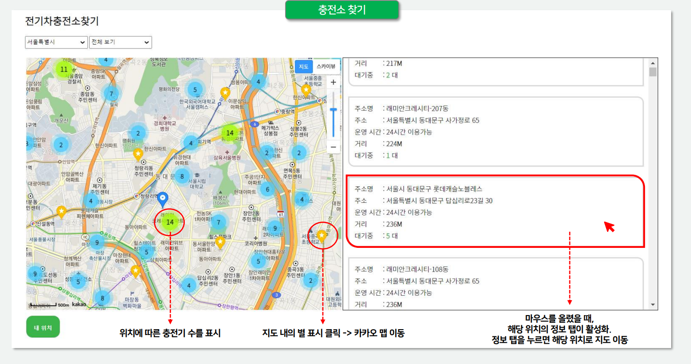

세미 프로젝트
전기차 충전소 찾기
저는 프론트 엔드를 해서 백엔드하는 팀원과 의사소통을 자주 했습니다. 이 기능은 전기차 충전소 찾기입니다. 예를 들어 서울특별시에서 영등포구를 선택하면 영등포구의 중앙으로 지도가 배치됩니다. 각 충전소위치는 충전기수를 표시하고 있고 별표시를 누르면 카카오 맵으로 이동됩니다. 그리고 빨간색으로 표시되어 있는 충전소를 누르면 해당 위치로 지도가 이동됩니다. 전기차에 관한 모든 정보를 제공한다는 저희의 기획의도에서 핵심적인 기능중 하나입니다.